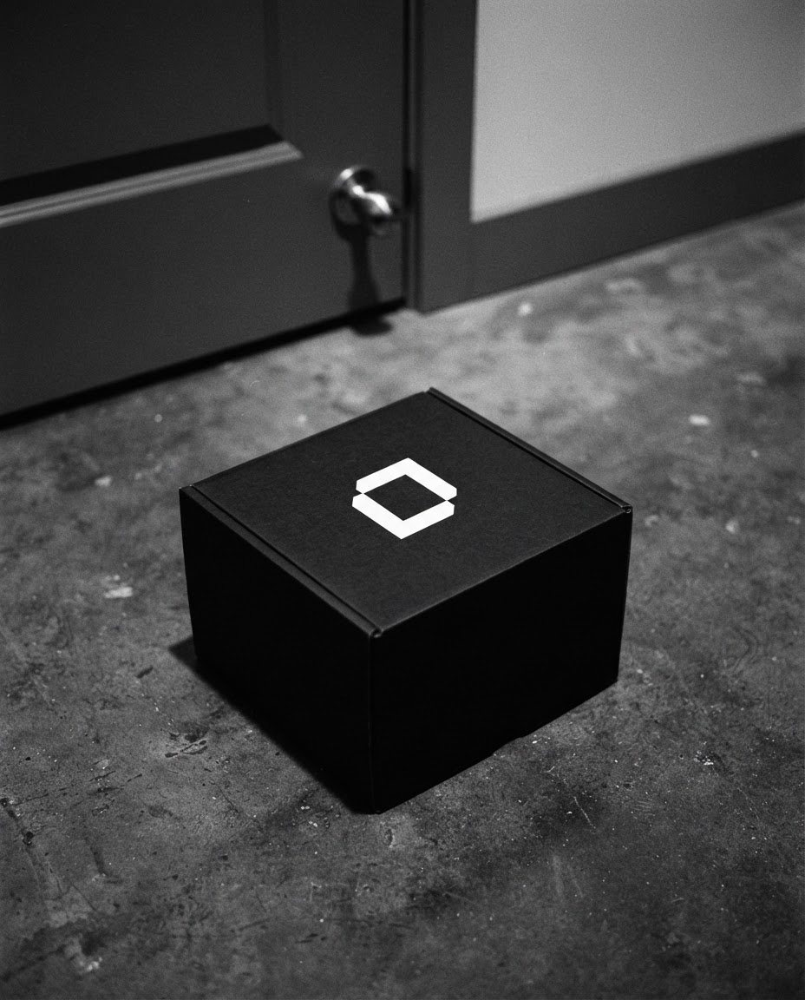
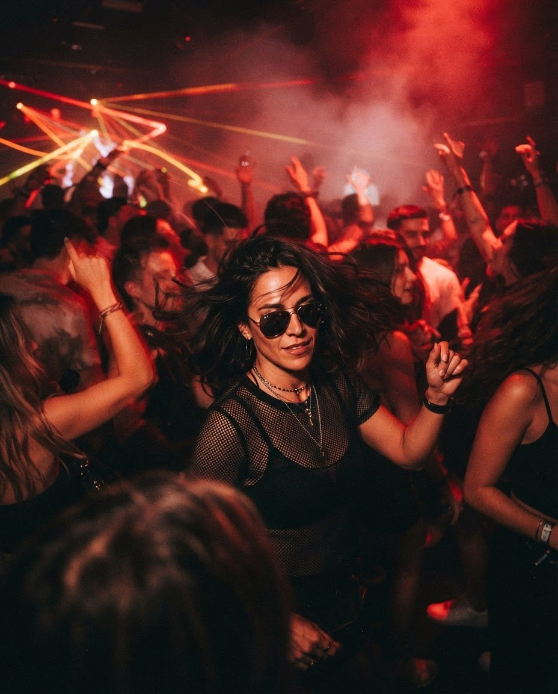
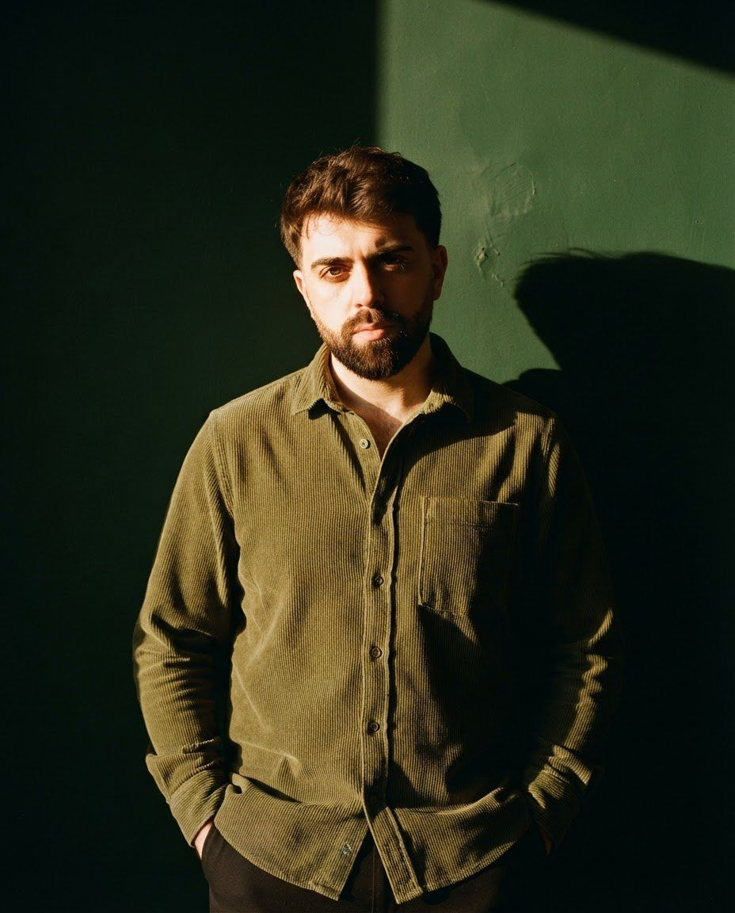

Hacemos marcas como se hace ciencia: con hipótesis, pruebas y resultados que se repiten.
Estudio creativo de Buenos Aires para Argentina y Estados Unidos. Marca, contenido, redes y eventos.
Ver las muestrasMuestras
Cada proyecto, registrado como un experimento: qué se buscó y qué salió.
-

- Muestra
- 01
- Nombre
- CER
- Rubro
- Centro de entrenamiento
-

- Muestra
- 02
- Nombre
- NERO
- Rubro
- Tienda digital de tecnología
-

- Muestra
- 03
- Nombre
- El Calentón
- Rubro
- Evento de latin tech music
-

- Muestra
- 04
- Nombre
- Crisger
- Rubro
- Seguridad industrial
-
- Muestra
- 05
- Nombre
- Alma
- Rubro
- Productora de eventos
También pasaron por el laboratorio: Extracto Importado, Pueblo Límite, UFO, Know How, Lado B, Meister, Muchachos, La Playa y Lima.
Protocolos
Cuatro líneas de trabajo. Se aplican solas o combinadas.
| Protocolo | Qué resuelve | Qué se entrega |
|---|---|---|
| Marca | Lo que hace distinta a tu marca, con una forma que se reconoce en cualquier lugar. | Estrategia, identidad visual, sistema gráfico, manual de marca |
| Contenido | Fotos, videos y piezas con una idea detrás. | Dirección de arte, fotografía, video, diseño de piezas |
| Marketing y redes | Redes que trabajan todos los días, también cuando vos estás en otra cosa. | Planificación, gestión de cuentas, campañas, seguimiento |
| Eventos | De la primera idea a la última historia de la noche. | Concepto e identidad, piezas de difusión, contenido |
Procedimiento
El mismo orden en cada proyecto, para que el resultado no dependa de la suerte.
- Paso 1
Entender
Escuchamos antes de proponer: qué ofrecés, a quién y qué lugar ocupás hoy.
- Paso 2
Definir
Elegimos un rumbo: posicionamiento, tono y prioridades.
- Paso 3
Crear
Diseñamos y producimos. Cada pieza responde a una decisión.
- Paso 4
Acompañar
Medimos, ajustamos y nos quedamos cerca.
Hipótesis de trabajo
Si todo sale del mismo lugar, nada se contradice.

A cargo del laboratorio
Trabajamos con pocas marcas a la vez, para conocer cada una de cerca: cómo habla, qué quiere y hacia dónde va. Muchas de esas relaciones llevan años.
- Nombre
- Matías Gaiteiro
- Rol
- Fundador y director creativo
- Base
- Buenos Aires
Iniciemos un experimento.
Contanos en qué estás: una idea suelta, un lanzamiento o algo que no termina de funcionar. Te respondemos con una primera mirada y el próximo paso.
Escribinos por WhatsApp